Experiment with Feature Sets
Table of Contents
This document analyses the data/exp-feature-sets-*-50.csv datasets
ie. results from the feature sets experiments.
1. Init
import os
import sys
import pandas as pd
import numpy as np
import seaborn as sns
import matplotlib.pyplot as plt
ROOTDIR = os.path.abspath(os.path.join(os.getcwd(), ".."))
DATADIR = os.path.join(ROOTDIR, "data")
sys.path.insert(0, ROOTDIR)
pd.set_option('display.max_columns', None)
pd.set_option('display.max_colwidth', None)
2. EDA
Lets analyse the data obtained from 50 iterations of the experiment. First, we need to combine the datasets into a single dataframe.
import glob frames = [pd.read_csv(frame) for frame in glob.glob(os.path.join(DATADIR, "*-50.csv"))] data = pd.concat(frames) data.shape
| 93750 | 25 |
data.dtypes
num_negatives float64 theil_index float64 accuracy float64 FPR float64 average_abs_odds_difference float64 disparate_impact float64 model object FN float64 TNR float64 protected object FP float64 base_rate float64 TPR float64 num_positives float64 true_positive_rate_difference float64 FNR float64 TP float64 statistical_parity_difference float64 PPV float64 f1 float64 num_features int64 privileged object iteration int64 TN float64 dataset_label object dtype: object
3. Disparate Impact & Statistical Parity Difference [0/2]
In this section we take a closer look at the disparate impact & statistical parity difference metrics. We start with these two since we have both data & model variants for these metrics.
# fairness metrics are calculated without conditioning on any (un)privileged group
metrics = data[data["privileged"] == "None"]
metrics = metrics[[
"disparate_impact",
"statistical_parity_difference",
"iteration",
"model",
"protected",
"num_features",
"dataset_label"
]]
metrics
disparate_impact statistical_parity_difference iteration \
0 0.380463 -0.190953 0
3 0.325643 -0.176814 0
6 0.425396 -0.167885 0
9 0.322013 -0.170099 0
12 0.360431 -0.176439 0
... ... ... ...
29985 0.456837 -0.138794 49
29988 0.272496 -0.112363 49
29991 0.528534 -0.108183 49
29994 0.263804 -0.117350 49
29997 0.384522 -0.081692 49
model protected num_features dataset_label
0 None sex 11 adult
3 logisticregression sex 11 adult
6 decisiontreeclassifier sex 11 adult
9 adaboostclassifier sex 11 adult
12 randomforestclassifier sex 11 adult
... ... ... ... ...
29985 None RACE 3 meps
29988 logisticregression RACE 3 meps
29991 decisiontreeclassifier RACE 3 meps
29994 adaboostclassifier RACE 3 meps
29997 randomforestclassifier RACE 3 meps
[31250 rows x 7 columns]
Lets preprocess the data next prior to analysis. zhang2021ignorance
took the absolute value for all fairness metrics. For disparate impact
zhang took the distance of the metric to one & then normalised the
value between [0, 1]. We also lowercase the values in the protected
column while we are are at it.
cols = ["disparate_impact", "statistical_parity_difference"]
metrics["protected"] = metrics["protected"].str.lower()
metrics["disparate_impact"] = metrics["disparate_impact"] - 1
metrics[cols] = metrics[cols].abs()
from sklearn.preprocessing import MinMaxScaler
scaler = MinMaxScaler()
metrics["disparate_impact"] = scaler.fit_transform(
metrics["disparate_impact"].values.reshape(-1, 1)
).ravel()
Lets create a simple lineplot to observe the general trend of the fairness metrics across various feature sets. Since different datasets have different protected attributes, we need to create separate figures for each dataset.
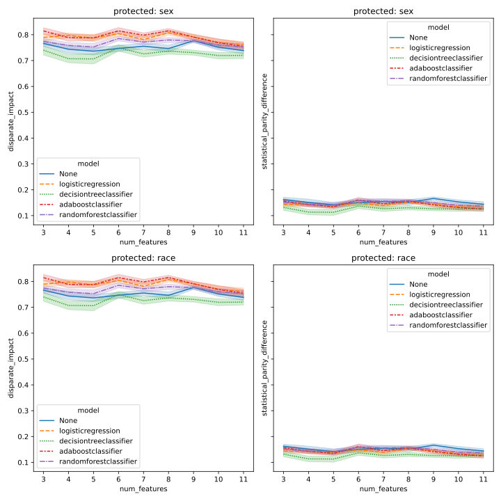
Figure 1: Lineplot DI & SPD Adult
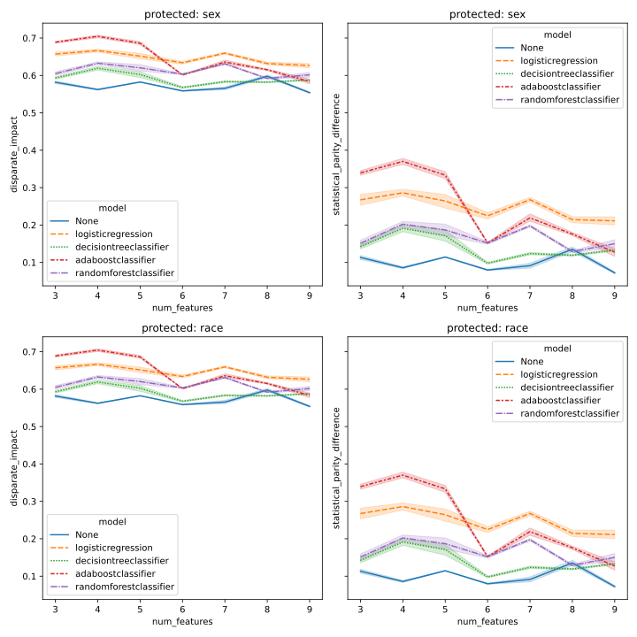
Figure 2: Lineplot DI & SPD Compas
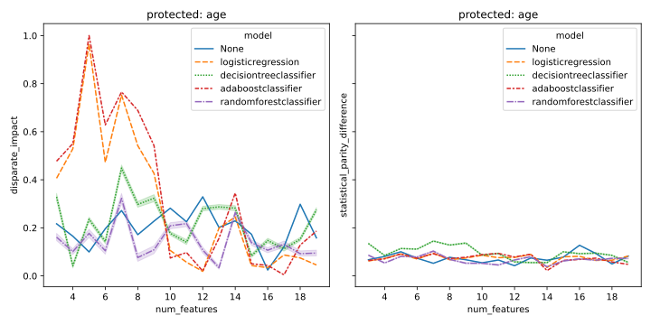
Figure 3: Lineplot DI & SPD Bank
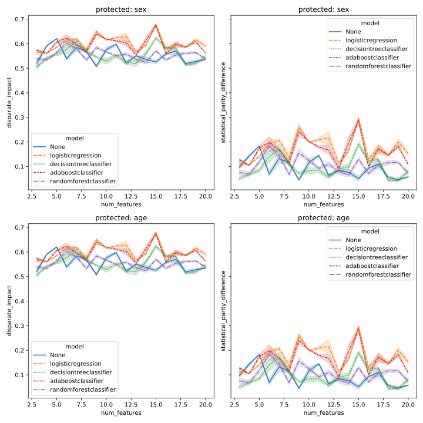
Figure 4: Lineplot DI & SPD German
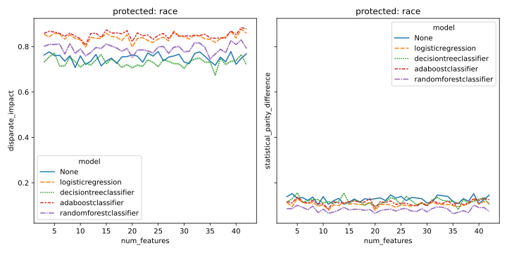
Figure 5: Lineplot DI & SPD Meps
[ ]focus on each dataset[ ]widen across all datasets- generally speaking, in some dataset-protected-model combinations I see that increasing feature set size improves fairness
Lets also look at the distribution of the fairness metrics across feature set sizes using boxplots.
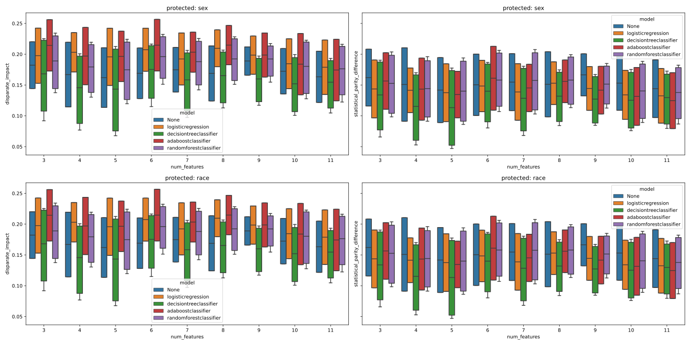
Figure 6: Boxplot DI & SPD Adult
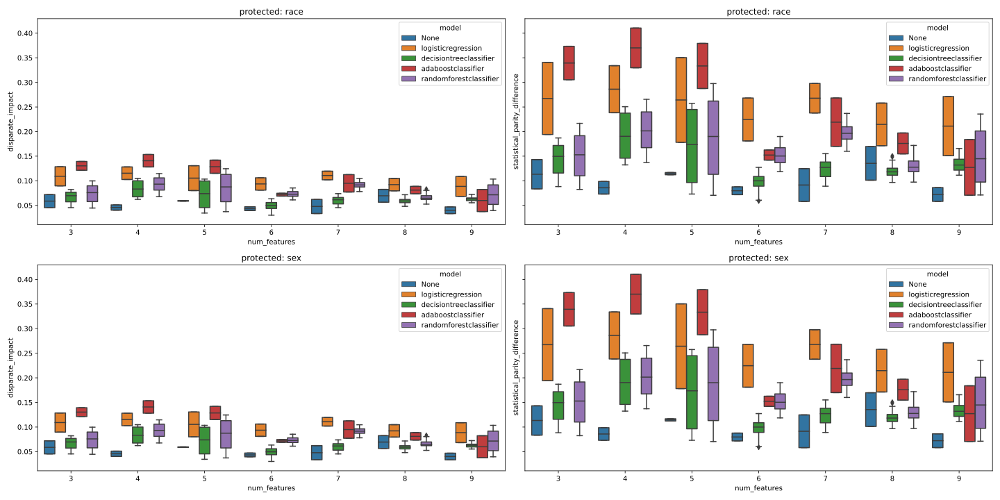
Figure 7: Boxplot DI & SPD Compas
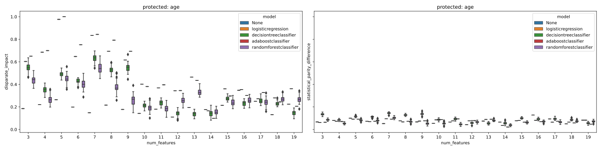
Figure 8: Boxplot DI & SPD Bank
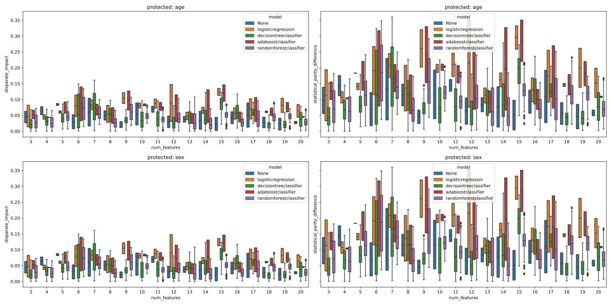
Figure 9: Boxplot DI & SPD German
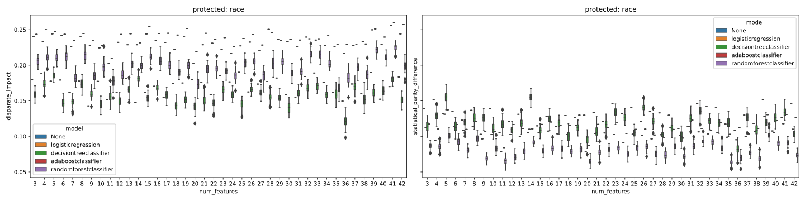
Figure 10: Boxplot DI & SPD Meps
3.1. Relationship between data & model variant [0/0]
In this section we want to validate that the data & model metrics are related to one another. We employ two types of tests:
- Correlation between data & model variants
- Fitting a linear regression model between data & model variants
The data needs some manipulation to make it fit for further visualisations. We want the following columns:
- x: the data variant of fairness metrics (float)
- y: the model variant of fairness metrics (float)
- model: the model used for the y value
- protected: the name of the protected attribute
- metric: name of the fairness metric
As above, we will create different figures for each dataset.
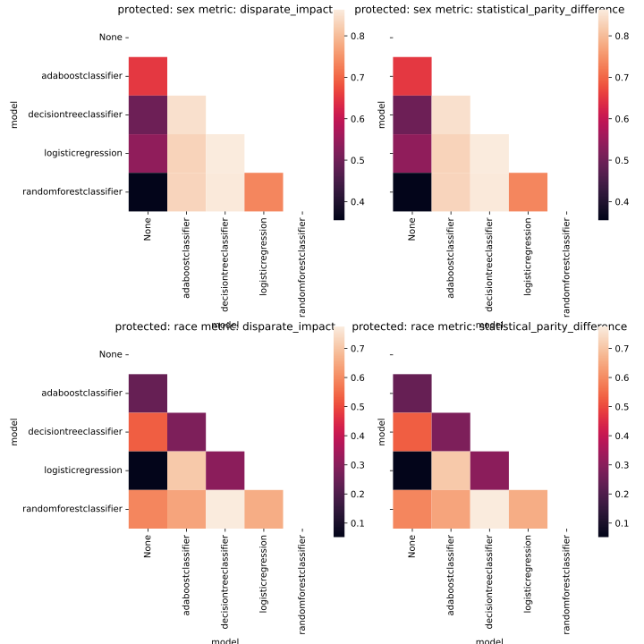
Figure 11: Heatmap DI & SPD Adult
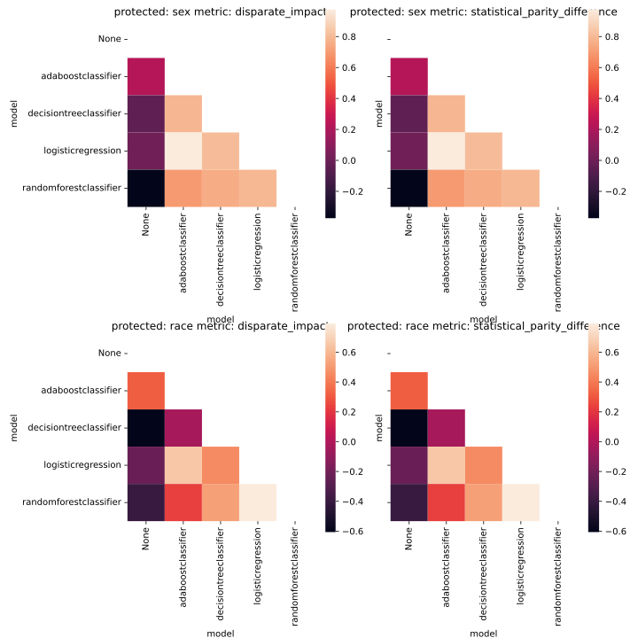
Figure 12: Heatmap DI & SPD Compas
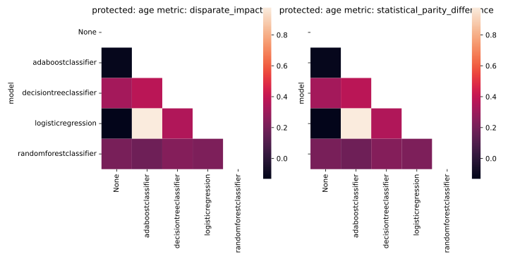
Figure 13: Heatmap DI & SPD Bank
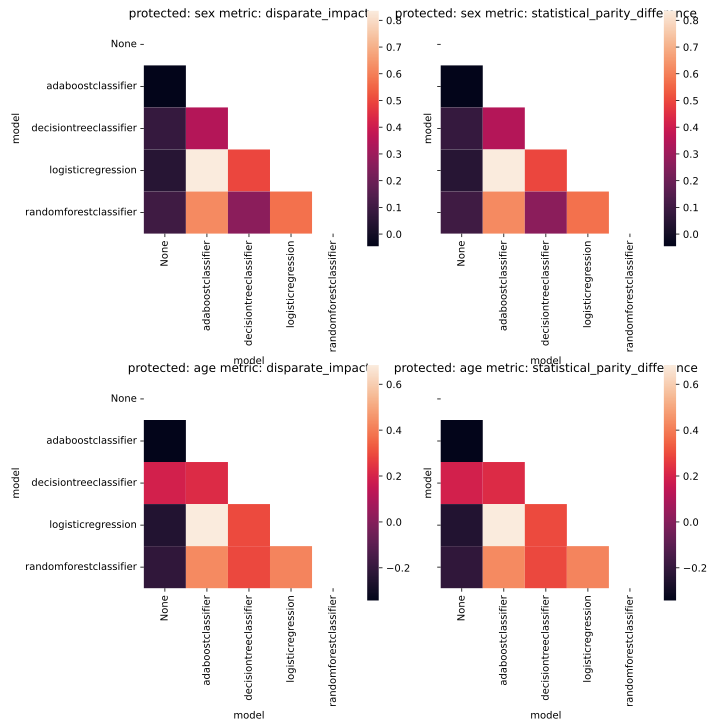
Figure 14: Heatmap DI & SPD German
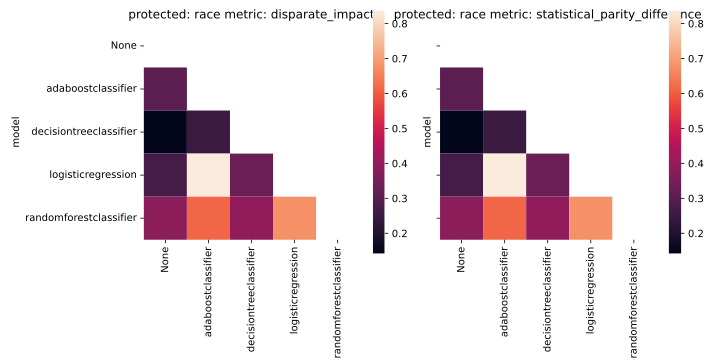
Figure 15: Heatmap DI & SPD Meps
[ ]analyse correlation heatmaps within datasets[ ]then generalise results across datasets- in general, I see that for certain dataset-protected-model combinations, the data & model variants are correlated.
Next, we want to fit a linear regression model on the data & model variants.
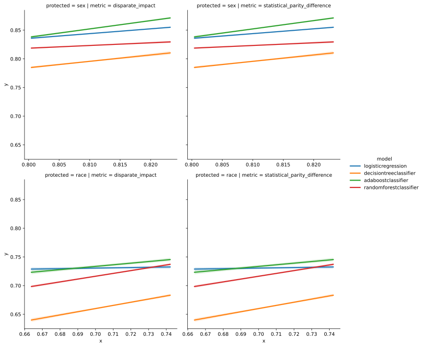
Figure 16: Regplot DI & SPD Adult
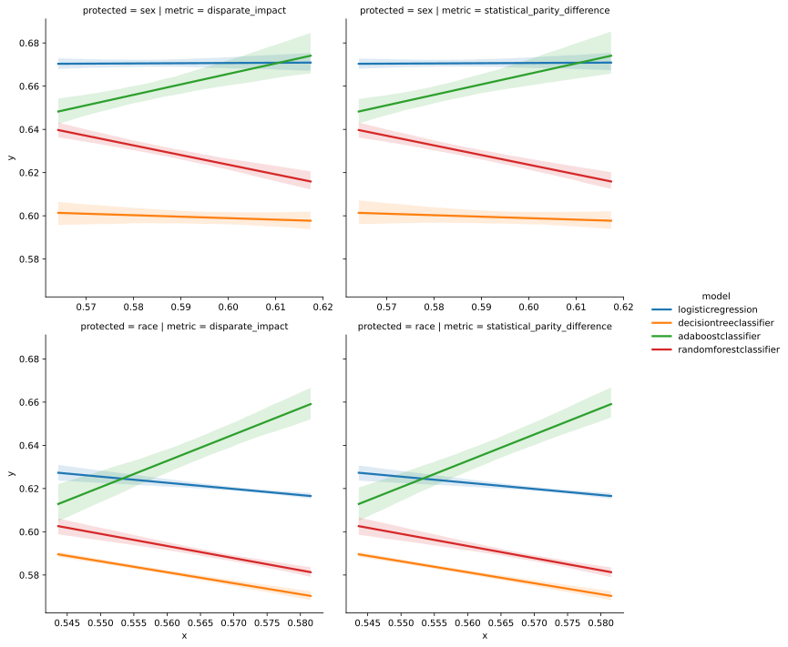
Figure 17: Regplot DI & SPD Compas
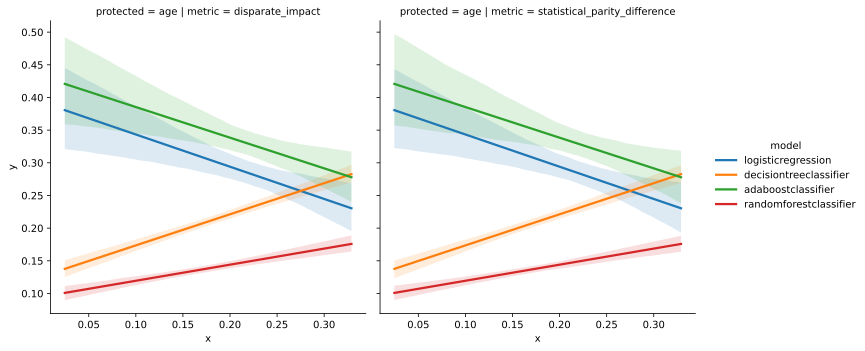
Figure 18: Regplot DI & SPD Bank
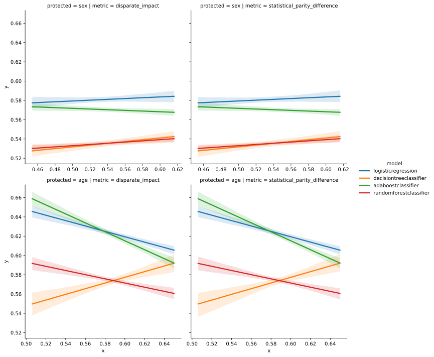
Figure 19: Regplot DI & SPD German
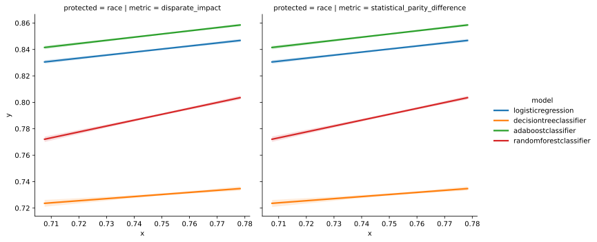
Figure 20: Regplot DI & SPD Meps
4. Base rate & others [0/2]
In this section we consider all 4 fairness metrics & try to find a relationship with the base rate metric since this is the only data metric fairness that may be generalisable to all model fairness metrics.
[ ]lineplot of baserate vs. other metrics; how do the conditioned base rates compare to other metrics?[ ]